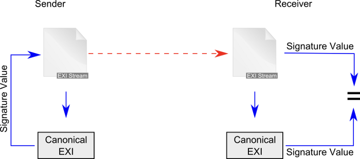
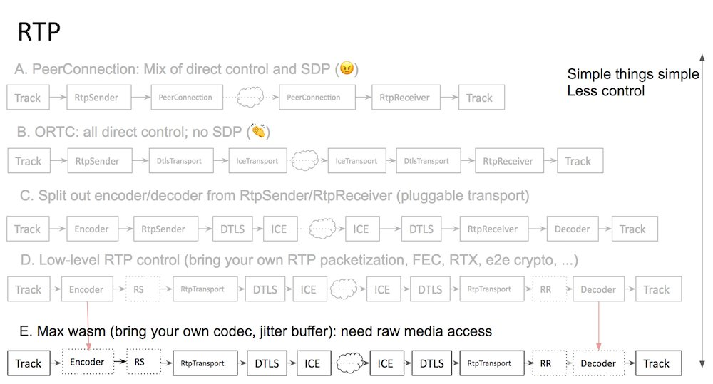

Results are in!! Congrats to @ab elected members: Jay (Junichi) Kishigami (@NTTPR), @frivoal (#W3CInvitedExpert), @TzviyaSiegman (@WileyGlobal), @daithesong (@Apple) and @LeonieWatson (@paciellogroup) https://twitter.com/w3cdevs/status/991733860747698177
https://twitter.com/w3cdevs/status/1002521847014010880June@W3C: business shows, face-to-face meetings, conferences, meetup, etc. https://www.w3.org/participate/eventscal.html

5: #WebXR talk by @dontcallmeDOM @WideWebVR's #AR & #VR meetup in #Marseille üá´üá∑ https://www.meetup.com/fr-FR/Meetup-Realite-augmentee-Marseille/ #AugmentedReality #VirtualReality #MixedReality

https://twitter.com/w3cdevs/status/10025597665294950405-6: @w3c Spatial Data on the Web #InterestGroup #f2fmeeting https://www.w3.org/2017/sdwig/meetings/f2f-2.html in #FortCollins CO üá∫üá∏ co-located with #OGC18FC @opengeospatial
https://twitter.com/w3cdevs/status/100255977095448985614-15: @cssdayconf 2018 w/ a #UX special day. Speakers include @csswg participants' @meyerweb and @gregwhitworth https://cssday.nl/2018 in #Amsterdam üá≥üá±

12: @sabouzah of @wai is a panelist @MyEDF's workshop related to implementation and coherence of #a11y #accessibility standards on a global scale https://www.edf-feph.org/events/12-june-side-event-cosp-international-developments-toward-accessibility-standards-coherence in #NYC üá∫üá∏ (@UN)
https://twitter.com/w3cdevs/status/100255977542981222411-13: @w3c's CEO @jeff_jaffe and @w3c_wai's Judy Brewer keynote at Promoting accessible technologies and environments @mEnablingSummit in #WashingtonDC üá∫üá∏ http://www.m-enabling.com/agenda.html#tuesday #WCAG21
https://twitter.com/w3cdevs/status/10025597740583362586-7: Meet @w3c staff @ConnectorKaren and @tguild @TUAutomotive in #Novi MI üá∫üá∏ for the #ConnectedCar #WebAuto conference TU-AUtomotive Detroit https://automotive.knect365.com/tu-auto-detroit/
https://twitter.com/w3cdevs/status/100255977234280448119-20: #WebRTC #WorkingGroup #f2fMeeting in #Stockholm üá∏üá™ hosted by @Google https://www.w3.org/2011/04/webrtc/wiki/June_19-20_2018

https://twitter.com/w3cdevs/status/100255977988420812918-20: #WebPayments talk by @JABird at the Financial Innovation and Payments Summit in #NewPort RI üá∫üá∏ http://opalgroup.net/conference/financial-innovation-payments-summit-2018/

https://twitter.com/w3cdevs/status/100255977729634304030-5 July: a series of Web of Things #WoT #IoT meetings in #Bundang üá∞üá∑ hosted by @withtta: a #PlugFest open to implementers, an #OpenDay, and a #f2fmeeting for members and registered observers only. All details: https://www.w3.org/WoT/IG/wiki/F2F_meeting,_30_June-5_July_2018,_Bundang,_Korea
https://twitter.com/w3cdevs/status/100255978412878643219-21: #HTML #f2fmeeting in #Amsterdam üá≥üá± https://github.com/w3c/WebPlatformwg/blob/gh-pages/meetings/18-06-html.md organized by @w3c's #WebPlatform #WorkingGroup and hosted @HvA
https://twitter.com/w3cdevs/status/1002559782690213889It notably led to the creation of a new Data Privacy Vocabularies and Controls @w3c #CommunityGroup https://www.w3.org/community/dpvcg/. Join and contribute!
The #W3CWorkshop's report is now out! https://www.w3.org/2018/vocabws/report.html with proposals to develop various vocabularies or taxonomies for: regulatory privacy terms (esp. all #GDPR terms), personal data, purposes, disclosure, etc. @specialprivacy https://twitter.com/w3cdevs/status/986227256241606656
https://twitter.com/w3cdevs/status/1003327123506057217#WebDriver is a cross-browser set of protocol and #APIs that allows #Web authors and #developers to write and execute tests against different browsers.
Congrats to editors @AutomatedTester and @shs96c for advancing #WebDriver to #WebStandard status! https://www.w3.org/TR/webdriver/ #timetoadopt https://twitter.com/w3c/status/1004008763391709187
https://twitter.com/w3cdevs/status/1004023896558002181#WebDriver is a key enabler of #Selenium 2 https://www.seleniumhq.org/projects/webdriver/ @SeleniumHQ

https://twitter.com/w3cdevs/status/1004023901133983744It defines the #WebDriver #API, a platform and language-neutral interface that enables the use of different programs or scripts to introspect into, and control the behaviour of, a #WebBrowser. Supported programming languages are: #Java #PHP #Python #Perl #Ruby etc.
https://twitter.com/w3cdevs/status/1004023899112296450"Having a standard way to automate interaction with a browser is a big win for #WebDevelopers in helping ensure their #WebApplications work in the best way they should for their users", concludes Michael[tm] Smith from @w3c. Read his full post at https://www.w3.org/blog/2018/06/webdriver-recommendation/
https://twitter.com/w3cdevs/status/1004023905449848839#WebDriver is widely supported, with implementations shipping for all four major browser engines: https://github.com/w3c/webdriver/blob/master/implementation-report.md
https://twitter.com/w3cdevs/status/1004023903101046784Congrats to editors @awkawk (@Adobe), @joshueoconnor (#InvitedExpert), @alastc (@we_are_nomensa) (who are also chairs of the @wai Accessibility Guidelines #WorkingGroup - https://www.w3.org/WAI/about/groups/agwg/), @cooper_w3c (@w3c) and all #WorkingGroup participants: https://www.w3.org/groups/wg/ag/
Tremendous news indeed! #WCAG21 is a @w3c #WebStandard https://www.w3.org/TR/WCAG21/ #accessibility #a11y #timetoadopt https://twitter.com/w3c/status/1004005752221192194
https://twitter.com/w3cdevs/status/1004046232816414722#WCAG21 is backward compatible with WCAG 2.0, and the three levels of success criteria (A, AA, AAA) still apply.
https://twitter.com/w3cdevs/status/1004046236238974977The initial work dates back from 1997 with the release of WCAG1.0 and its popular WAI quick tips to make accessible #websites. WCAG2.0 was published in December 2008 and later became an #ISO standard (#ISO40500) in 2012.
https://twitter.com/w3cdevs/status/1004046234720620545The success criteria were tested in implementations across different types of #websites and Web content. Check out the #WCAG21 implementation report: https://www.w3.org/WAI/WCAG21/implementation-report/
https://twitter.com/w3cdevs/status/1004046241070796806#WCAG21 provides 17 additional success criteria to address mobile accessibility, people with low vision, people with cognitive and learning disabilities. Read more: https://www.w3.org/WAI/standards-guidelines/wcag/new-in-21/
https://twitter.com/w3cdevs/status/1004046238751154176See more support materials to help you understand and implement #accessibility #a11y at the @wai redesigned Web site: https://www.w3.org/WAI/

https://twitter.com/w3cdevs/status/1004046244950495232#developers and #authors are invited to use #WCAG21 to make the #Web accessible to EVERYONE! https://www.w3.org/WAI/standards-guidelines/wcag/ #MaketheWebBetter #WebForAll
https://twitter.com/w3cdevs/status/1004046243612561410The group will review the @opengeospatial technology trends to identify areas for coordination that would make spatial-data more Web-friendly https://github.com/opengeospatial/OGC-Technology-Trends/blob/master/README.md
Day 1 of the @w3c Spatial Data on the Web #InterestGroup #f2fmeeting https://www.w3.org/2017/sdwig/meetings/f2f-2.html https://twitter.com/w3cdevs/status/1002559770954489856
https://twitter.com/w3cdevs/status/1004085420748099586Preparing a #roadmap for #SpatialData. Current analysis at https://github.com/w3c/sdw/blob/gh-pages/roadmap/analysis.md. See anything missing? Have an idea to group features? Input welcome at https://github.com/w3c/sdw/issues/1030
https://twitter.com/w3cdevs/status/1004085423310860290The Linked Building Data @w3c #CommunityGroup will tell the group about its work on Building Information Modeling (#BIM) https://www.w3.org/community/lbd/
https://twitter.com/w3cdevs/status/1004085428365025282The @w3c Spatial Data on the Web #InterestGroup will check on the progress of #MapML (Maps for #HTML) since last February https://github.com/w3c/strategy/issues/115
https://twitter.com/w3cdevs/status/1004085425697443842Implementation experience with Semantic Sensor Network Ontology #WebStandard to trigger proposal to extend it with an ObservationCollection class and an hasUltimateFeatureOfInterest property https://github.com/w3c/sdw/projects/7 https://www.w3.org/TR/vocab-ssn/
https://twitter.com/w3cdevs/status/1004085429912600577There are discussions on the #WebVMT format proposal to associate geotagging information with a video https://github.com/w3c/strategy/issues/113
Day 2 of the @w3c Spatial Data on the Web #InterestGroup #f2fmeeting https://www.w3.org/2017/sdwig/meetings/f2f-2.html https://twitter.com/opengeospatial/status/1004414403352186880
https://twitter.com/w3cdevs/status/1004417289503035392Trying to apply Data on the Web #BestPractices to statistics https://github.com/w3c/sdw/blob/gh-pages/stats-bp/dwbp-for-stats.md
https://twitter.com/w3cdevs/status/1004417294561398784Is it time to standardize #CityJSON, a format for encoding a subset of the CityGML data model in #JSON? https://github.com/w3c/strategy/issues/11
https://twitter.com/w3cdevs/status/1004417292116156417Gathering use cases for best practices for the publication of statistics on the #Web https://github.com/w3c/sdw/blob/gh-pages/stats-bp/draft-use-case-list.md
https://twitter.com/w3cdevs/status/1004417297283518464Canonical EXI can be used to sign EXI streams without using an #XML serialization first, which makes signing and checking available to low CPU/low bandwidth/low memory devices. Read the primer: https://www.w3.org/TR/2014/WD-exi-primer-20140424/
https://twitter.com/w3cdevs/status/1004654650430287873Produced by the @w3c EXI #WorkingGroup, Canonical Efficient #XML Interchange describes a method for generating a canonical form of an EXI document to enable digital signatures without going through #XML form.
Congrats to editors Daniel Peintner and Sebastian Käbisch @SiemensAG for advancing Canonical EXI to #WebStandard status! https://www.w3.org/TR/exi-c14n/ #timetoadopt! https://twitter.com/w3c/status/1004647943855656960
https://twitter.com/w3cdevs/status/1004654648437956608EXI is used in ISO/IEC 15118-2 (Vehicle-to-grid #V2G) and Canonical EXI will be part of it https://www.iso.org/standard/55366.html @isostandards
https://twitter.com/w3cdevs/status/1004654654691725313Check out EXI in the comparison tables of 1) data serialization formats and 2) binary formats in #Wikipedia https://en.wikipedia.org/wiki/Comparison_of_data_serialization_formats#Overview
https://twitter.com/w3cdevs/status/1004654653374713857EXI is not only useful for XML documents, but can improve compactness and performance for many languages, such as #JSON https://www.w3.org/TR/exi-for-json/ or #CSS, #Javascript, etc. https://www.w3.org/blog/2016/11/efficient-representation-for-web-formats/
https://twitter.com/w3cdevs/status/1004654651692732416The new #JSONLD Working Group has now been formally approved http://lists.w3.org/Archives/Public/public-new-work/2018Jun/0000.html #JSONLD 1.1, here we come! https://twitter.com/w3cdevs/status/974283848468090880
https://twitter.com/w3cdevs/status/100470902875113881614: @sabouzah is a guest speaker of @AssoBrailleNet's 20 years celebration event in #Paris üá´üá∑ (@microsoftfrance) http://www.braillenet.org/en/braillenet-celebrates-20-years-of-digital-accessibility/ #a11y #accessibility #Web #ebooks
https://twitter.com/w3cdevs/status/1006151451742294016The #DoNotTrack specifications are developed in https://github.com/w3c/dnt
https://twitter.com/w3cdevs/status/1006472017464479744“The API was extended so that a site-specific signal was available to indicate the required right-to-object for permitted «web audience measurement»”
https://twitter.com/w3cdevs/status/1006472015837122560“further changes in the draft were put forward to meet the requirements for the European Parliament’s agreed text for the EU’s ePrivacy Regulation”
https://twitter.com/w3cdevs/status/1006472014281003008@jeff_jaffe #WCAG21 https://twitter.com/samspearsevans/status/1006523207816491014
https://twitter.com/w3cdevs/status/1006525675019407360Applicants must reside/work in #Europe üá™üá∫, and have experience wrt development of standards. More at https://www.standict.eu/OpenCalls/2nd-Open-Call#who
https://twitter.com/w3cdevs/status/1006544272605270018Financial support is available for standardization linked with a list of well identified topics, many of which intersect with @w3c's agenda. Check them out: https://www.standict.eu/OpenCalls/2nd-Open-Call#Topics
Are you based in #Europe and actively involved in @w3c #WebStandards development? You can apply for funding this work (before August 4): https://www.standict.eu/OpenCalls/2nd-Open-Call @Stand_ICT https://twitter.com/silvanamuscella/status/1002585507916845056
https://twitter.com/w3cdevs/status/1006544271200149505To our followers who give feedback, contribute to and implement @w3c specifications, how about registering now? üôã‚Äç‚ôÄÔ∏èüôã‚Äç‚ôÇÔ∏è https://www.standict.eu/applicant/register
https://twitter.com/w3cdevs/status/1006544275574751233Three types of grants: long-term, short-term and one-shot (event participation) contributions. See which related funding applies for chairing a #WorkingGroup, commenting on standard drafts, paying membership fees, etc. https://www.standict.eu/OpenCalls/2nd-Open-Call#contributions
https://twitter.com/w3cdevs/status/1006544274031370240.@slightlylate offers his and @ChromiumDev views on how to use the standardization and (specifically) the pre-standardization process to successfully bring new features to the Web https://twitter.com/slightlylate/status/1006960854170939394
This includes ensuring lots of input and feedback from #developers along the way, and letting innovation bloom in the early design cycles of a technology with less politics, IPR commitments and formalisms.
https://twitter.com/w3cdevs/status/1007249522827939840A lot of these ideas have been behind @w3c's #CommunityGroup offer https://www.w3.org/community/ in general (started back in 2011), and the start of the @wicg in particular (in 2015).
https://twitter.com/w3cdevs/status/1007249526560821248We don't have it all figured out, and we still have a lot to learn.
Some formal standardization Working Groups have been very successful at incubating ideas and bringing developers input to their regular workflows (e.g. @csswg)
https://twitter.com/w3cdevs/status/1007249531501797382More recently, the @w3CAB has been promoting that approach by documenting best practices on identifying standardization-ready specifications https://www.w3.org/Guide/standards-track/
https://twitter.com/w3cdevs/status/1007249529073274880If you feel strongly about bringing more exposure of @w3c standards to #developers, https://infrequently.org/2018/06/effective-standards-work-part-1-the-lay-of-the-land/ is mandatory reading in any case
https://twitter.com/w3cdevs/status/1007249536467767297.@w3cdevs'>@w3cdevs is here to help understand, document and promote effective ways for #developers to get involved in this next generation of Web technologies.
What has been *your* experience with @w3c? what are the main obstacles you've hit on the way?
https://twitter.com/w3cdevs/status/1007249534932701184In other cases, #CommunityGroups have sometimes created confusion.
But there are already quite a few amazing examples of new features or technologies landing in standardization that way (#ResponsiveImages, #WebAssembly, hopefully soon #WebXR to name a few).
https://twitter.com/w3cdevs/status/1007249533141741570Back in 2016, @w3c convened a workshop to look at how #VR and Web could play together, starring the great results of the then-named WebVR Community Group.
Since then, the work has evolved to encompass #AR primitives towards the Immersive Web
https://www.w3.org/blog/2018/01/towards-the-immersive-web/
Discussions on bringing the #WebXR Device API to the formal standardization track in this draft Immersive Web Working Group charter https://w3c.github.io/immersive-web-wg-charter/immersive-web-wg-charter.html https://twitter.com/w3c/status/1007259914211942400
https://twitter.com/w3cdevs/status/1007600074346647552The work of the #CommunityGroup is happening in https://github.com/immersive-web
The proposed charter is also developed on github at https://github.com/w3c/immersive-web-wg-charter
https://twitter.com/w3cdevs/status/1007600075923697664LIVE REPORT! The #WebRTC #WorkingGroup is meeting in #Stockholm üá∏üá™ today and tomorrow. A major focus is to look at the future of #WebRTC: which use cases it should cover, which new #APIs it should expose, and new ways of interacting with it (e.g. in workers)

This follows a rich discussion on the #public #WebRTC mailing list around use cases: https://lists.w3.org/Archives/Public/public-webrtc/2018Jun/thread.html
https://twitter.com/w3cdevs/status/1009038711739355136Discussions have started in the #f2fmeeting to identify how low level the new #API surface needs to be, and what constraints backwards #compatibility with the existing WebRTC 1.0 #API imposes.
https://twitter.com/w3cdevs/status/1009038716835368961It has been summarized in https://docs.google.com/document/d/1valj1gBZ2eMhAHSKOhFOWIRymnntWi7xKUeESvN4VxI/edit?ts=5b1ebf6d (to be turned into a #WorkingGroup document soon!)
https://twitter.com/w3cdevs/status/1009038715438686209Bringing #WebRTC in Workers, in particular in #ServiceWorkers, has been a longstanding request from the #developers community https://github.com/w3c/webrtc-pc/issues/230. The group is now discussing whether and how to make it happen https://www.w3.org/2011/04/webrtc/wiki/images/6/6b/Intro_to_workers.pdf. Stay tuned!
https://twitter.com/w3cdevs/status/1009038718806691843If you want to get started in contributing to the amazing cross-browser Web Platform Test project, there is now a list of good first issues.
Contributing to this project helps getting more interoperability across browsers down the line, and is a great way to dive into specs. https://twitter.com/zcorpan/status/1009371891411406848
https://twitter.com/w3cdevs/status/1009385440439422976As part of its ongoing action of promoting diversity and inclusion, @w3c is introducing a diversity scholarship to help bring more people from under-represented groups to participate in its #WorkingGroups and define the future of the #Web! https://twitter.com/w3c/status/1009437789748977671
This diversity scholarship is first offered for the upcoming #w3cTPAC meetings, October 2018, in Lyon üá´üá∑ https://www.w3.org/2018/10/TPAC/
A fund has been established thanks to sponsors @samsunginternet, @paciellogroup, @ConsenSys and @Microsoft.
https://twitter.com/w3cdevs/status/1009455307012083712#Web #developers and #designers who qualify should submit an application: https://www.w3.org/2002/09/wbs/1/diversity-scholarship-application-2018/ Deadline to submit is 15 July. Hurry up!
https://twitter.com/w3cdevs/status/1009455310258491392本日公開 @w3c #CSS3 UI #WebStandard の日本語翻訳が既に完成: https://momdo.github.io/css-ui/ どうもありがとう @momdo_! #w3c_keio
Today's published @w3c #CSS3 UI #WebStandard has already been translated into Japanese: https://momdo.github.io/css-ui/ Thank you @momdo_ ! #w3c_keio https://twitter.com/w3c/status/1009738537594388481
https://twitter.com/w3cdevs/status/1009783947692212226